KMA 준비사항
오늘의 흐름로그인 · 세팅
생성형 AI 실무 활용 7시간 수강생용 안내 페이지입니다. 오늘 여러분은 가상 조직 이든의 AI 도입 TF 멤버가 됩니다. 모든 글은 [복사], 모든 파일은 [받기]로 가져가세요. 무료 계정으로 할 수 있는 만큼, 1단계 vs 4·5단계를 비교하며 원리를 느끼는 실습입니다.
안 되는 부분은 화면을 캡처해서 강사에게 보여주세요. 결과물은 단톡방에 올려 서로 공유합니다.
오늘의 흐름
한눈에 보는 오늘 수업 흐름입니다. 누르면 그 파트로 이동합니다.
이론 — 지도 먼저 보기
오늘 실습 전에 큰 그림을 먼저 봅니다. 교안 쪽수를 함께 적었습니다.
글 · 이미지 · 오디오 · 영상 — 만드는 것은 그대로, 도구만 AI로
교안 6p글 : 클로드 · 챗지피티 / 이미지 : 챗지피티 · 나노바나나 / 오디오 : 수노 · 일레븐랩스 / 영상 : 구글 플로우
교안 7p말로 → 샘플 → 프롬프팅 → MD → 봇 · 스킬 → 자동화 → 바이브 코딩. 오늘은 1~4단계 직접, 5~7단계 시연
교안 8p내 말을 각 AI의 언어로 통역하는 지휘자 — 채팅형 AI 5종을 골라 쓰기
교안 9~11p누가 · 누구에게 · 무엇을 · 어떻게 · 샘플 · 자료 · 형식 — 좋은 프롬프트 vs 나쁜 프롬프트
교안 12~13p센스보다 샘플! 캡처 · 핀터레스트 · 프레임 시트 · 디자인 MD · 문서 샘플
교안 14~23pINS = 일하는 순서(지침), KB = 기준 · 자료. 대가의 뇌를 심는다
교안 24~27pMD를 한 번 넣어 두면 봇 — 프로젝트 · 젬스 · GPTs, 스타일 메뉴판
교안 28~32p컴(내 PC) · 앱(AI) · 웹(사이트)이 연결되면 자동화. API는 주문서, MCP는 플러그
교안 33~37p로그인 · 세팅
오늘 쓰는 도구는 모두 PC 크롬에서 엽니다. 줄을 눌러 열고 “Google로 계속”으로 로그인하세요.


크롬에 구글 계정으로 먼저 로그인해 두면, 나머지 사이트는 “Google로 계속하기” 버튼만 누르면 됩니다. 회사 메일보다 개인 구글 계정을 권합니다.
- 탭 8개를 미리 열어 두고 모두 로그인 상태인지 확인
- 클로드 : 왼쪽 메뉴에 프로젝트가 보이는지 확인 (안 보이면 '임시 봇'으로 진행)
- 클로드 : 설정 → 기능에서 웹 검색이 켜져 있으면 리서치가 더 좋아집니다
- 수노 · 플로우 : 첫 화면의 무료 크레딧 숫자를 확인 — 오늘은 실습마다 1회만
(선택 · 유료) 강사처럼 쓰고 싶다면
이든 AI 도입 TF
이든 — 사람들의 일상을 돕는 생활 서비스 조직(교육용 가상). 올해 “전사 생성형 AI 도입”을 선언했고, 여러분이 그 TF 멤버입니다. 과제 4건 : ① 임원 보고 ② AI 공모전 홍보 ③ 사내방송 ④ 홍보 영상
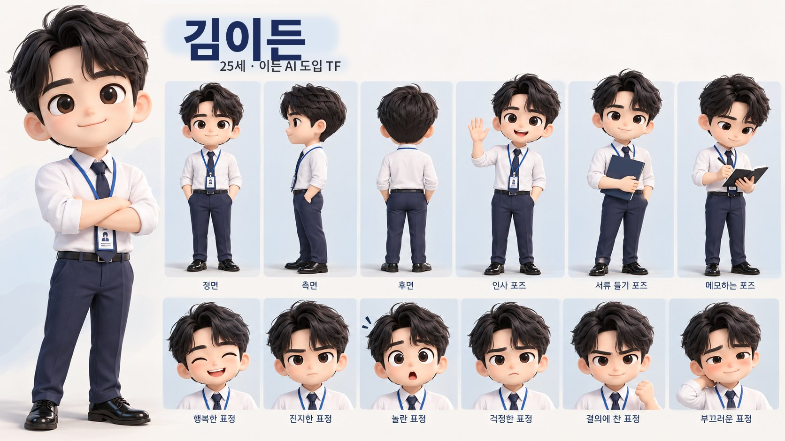

이든 로고 6종 (배경 투명 PNG)
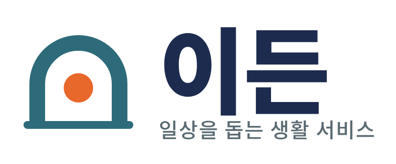

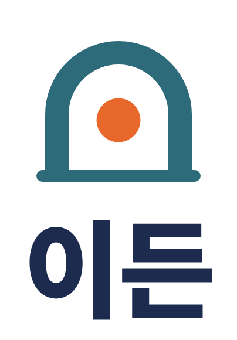

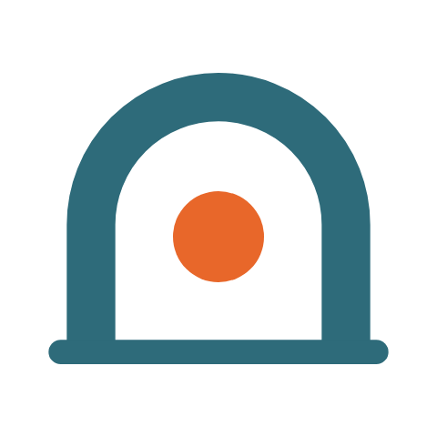


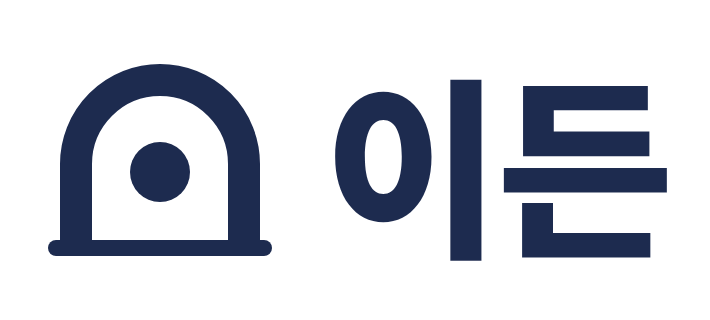

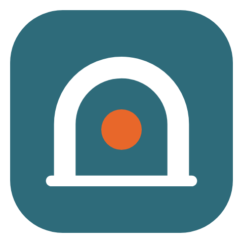

이든 기본 자료 (MD)
안목을 주는 법 — 샘플 관리법
센스보다 안목! 안목은 말로 못 줍니다 — 좋은 샘플 한 장을 보여 주면 생깁니다.
공모전 포스터 event poster minimal 카드뉴스 디자인 infographic card news
- 캡처 : 윈도우 Win+Shift+S · 맥 Cmd+Shift+4
- 이름 규칙 : 종류_용도_특징_번호 (예 : 샘플_포스터_레트로_01.jpg)
- 문서 샘플은 민감정보를 지우고 워드 · 텍스트로 보관
보고서 — 말로 vs MD vs 봇
앱 : 클로드 · 같은 요청을 단계만 바꿔 세 번 → 결과를 비교하세요.
우리 부서에 생성형 AI를 도입하는 방안에 대한 검토 보고서를 써줘. 임원 보고용으로.
B. 4단계 — 같은 채팅에 MD 한 파일 첨부 + 한 줄
첨부한 MD 기준으로 같은 보고서를 다시 써줘. PDF용 2쪽 + HTML 버전으로.
C. 5단계 — 보고서 봇 프로젝트 만들기 (지침 칸 + 파일 칸)
- 클로드 → 프로젝트 → 새 프로젝트 → 이름 (이든) 보고서봇
- 지침 칸에 아래 INS 붙여넣기
- 파일 칸에 KB 5개 올리기 → 새 채팅에 주제 한 줄
# INS · 보고서 봇 (업무 지침) ## 역할 - 너는 20년 경력의 기획팀 보고서 작성자이고, 임원 결재를 한 번에 받는 보고서로 유명하다. - 읽는 사람은 바쁜 임원이다. 첫 5줄만 읽고도 무엇을, 왜, 언제까지 하는지 알아야 한다. ## 작업 순서 1. KB_팩트시트를 끝까지 읽는다 — 근거는 이 안에서만 2. 핵심 3가지를 뽑는다 (문제 · 해결 · 요청) 3. KB_보고서구성 순서대로 초안을 쓴다 4. KB_보고서7원칙과 KB_문체규칙에 맞춰 다듬는다 5. KB_도식규칙대로 도식 3개 이상을 넣는다 6. 마무리 점검 후 출력한다 ## 절대 규칙 - 팩트 시트에 없는 숫자 · 날짜 · 예산은 만들지 않는다 → "(추후 확정)" - 주장마다 근거 꼬리표 : "(팩트 2항)" - 맨 위에 "※ 교육용 가상 자료" - 질문하지 말고 바로 완성본을 쓴다 ## 출력 - PDF : A4 최대 2쪽 (넘치면 줄인다) - HTML(요청 시) : 요약은 위, 상세는 접고 펼치기 · 탭 · 숫자 카운트업 ## 마무리 점검 (출력하지 않음) 두괄식인가 / 없는 숫자가 없나 / 꼬리표가 다 있나 / 2쪽 이내인가
리서치 — 1개 AI vs AI 3개 + 대가의 뇌
앱 : 챗지피티 · 제미나이 · 클로드 · 출처 등급과 교차검증이 붙으면 “믿을 수 있는 조사”가 됩니다.
국내 공공기관과 기업의 생성형 AI 도입 사례를 알려줘.
B. 5단계 — 리서치 봇 (AI 3개 교차검증)
- 클로드 프로젝트 (이든) 리서치봇 → 지침 칸에 INS, 파일 칸에 대가의 뇌 KB
- 주제 한 줄 → 봇이 준 조사 요청문을 챗지피티 · 제미나이에 붙여 돌리기
- 두 답을 복사해 클로드에 붙이기 → 교차검증 표 + PDF 요약 + HTML
# INS · 리서치 봇 (간단 버전) — 프로젝트 지침 칸에 붙여넣기 ## 역할 너는 이든 AI 도입 TF의 리서치 담당이다. KB_리서치대가의뇌의 방식으로 일한다. ## 작업 순서 1. 사용자가 주제를 주면, 하위 질문 3개로 쪼개서 보여 준다. 2. 챗GPT · 제미나이에 그대로 붙일 [조사 요청문]을 코드 블록 하나로 준다. - 요청문에는 하위 질문 3개, "출처 링크와 날짜를 반드시 함께", "모르면 모른다고"를 넣는다. 3. "두 AI의 답을 아래에 붙여 주세요"라고 안내하고 기다린다. 4. 두 답이 오면, 너도 같은 질문을 조사한다(웹 검색이 되면 사용) → 총 3개 출처 묶음. 5. KB 규칙대로 교차검증 · 출처 등급 · 사실/추정 분리를 한다. 6. 결과물을 만든다 (아래 '출력'). ## 출력 - [교차검증 표] 주장 | 챗GPT | 제미나이 | 클로드 | 판정(사실 · 추정 · 확인 필요) - [PDF용 요약] A4 1쪽 : 핵심 3줄 → 표 → 출처 목록(등급 표시) - [HTML] 요청하면 : 키워드 카드가 먼저 보이고, 누르면 상세 · 출처 등급 배지 · 등장 모션 ## 절대 규칙 - 출처 없는 숫자는 쓰지 않는다 → "(확인 필요)" - 한 곳에서만 나온 주장은 "사실"로 쓰지 않는다 - 질문은 1번 단계 외에는 하지 않는다
타 공공기관 · 기업의 생성형 AI 도입 사례와 효과
PPT × AI — HTML로 만들고 고치기
앱 : 클로드 · 이제 PPT는 AI가 HTML로 만듭니다. 말 한마디로 모션 · 폰트 · 색감 · 순서 · 로고를 바꿉니다.

첨부한 원고로 HTML 발표자료를 만들어줘. - 16:9 (1280×720), 6장 - 키보드 방향키로 넘기기, 하단에 쪽 번호 - 파일 1개 (HTML 안에 CSS·JS 포함)
모든 장에 들어올 때마다 글자가 아래에서 차례로 올라오는 모션을 넣어줘. 나머지는 그대로 둬.
글꼴을 Pretendard로 바꾸고, 제목은 더 굵고 크게 해줘.
전체 디자인을 네이비 + 주황 포인트로 바꿔줘. 배경은 아이보리.
4장(직원 인식)을 2장 바로 다음으로 옮겨줘.
첨부한 이든로고.svg를 모든 장 오른쪽 아래에 작게 넣어줘.
4장 우려 사항(보안 46 · 정확성 31 · 사용법 23)을 막대그래프로 바꿔줘.
마지막 장에 [PDF로 저장] 버튼을 달아줘.
포스터 — 말로 vs 샘플
앱 : 챗지피티 · 설명은 한 줄, 샘플은 한 장 — 그래도 결과는 확 달라집니다.
사내 ‘AI 활용 아이디어 공모전’ 포스터를 만들어줘. 세로 방향, 직원 대상, 예쁘게. 공모명 : 이든 AI 활용 아이디어 공모전 접수 : 12월 1일 ~ 12월 19일 시상 : 대상 1팀 100만 원 외 대상 : 이든 전 직원
B. 2단계 — 샘플 한 장 골라 같은 채팅에 첨부
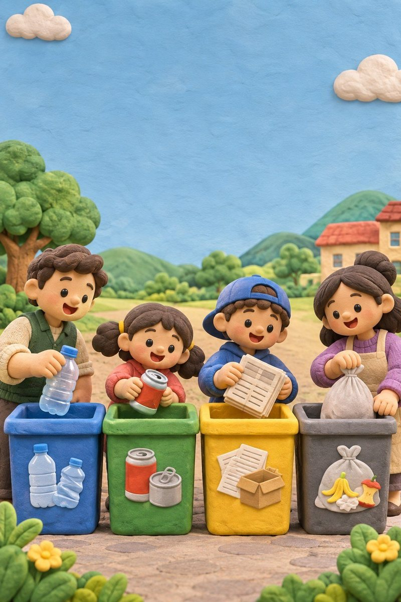


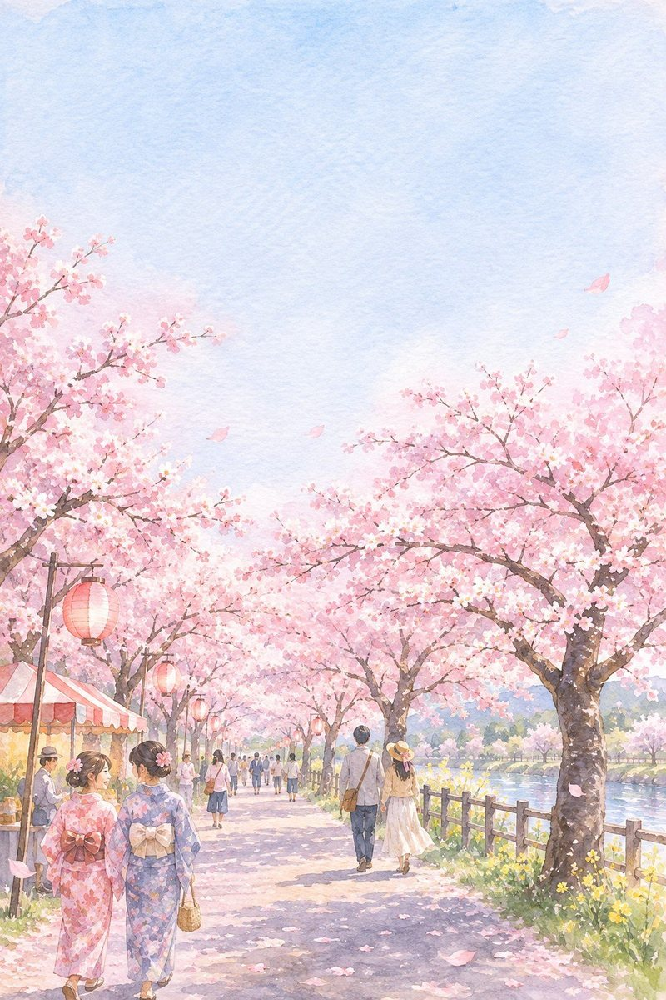

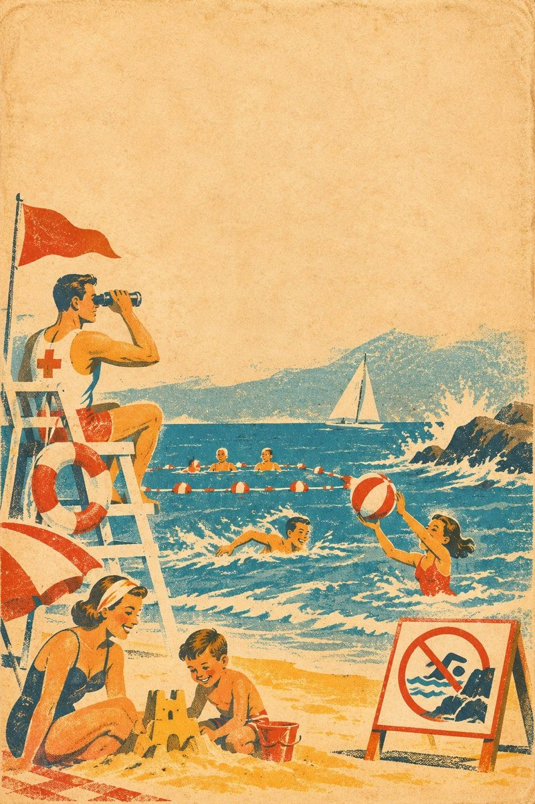


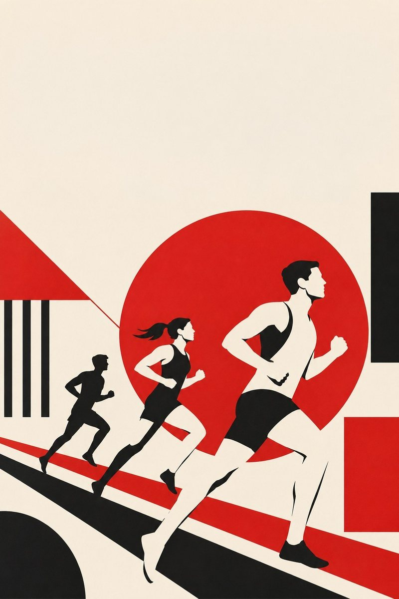


이번엔 이 이미지를 참고해서 위 포스터를 다시 만들어줘. 주로 그림체만 따라하고, 샘플 이미지의 내용은 따라하지 마.
오디오 — 음악 · 나레이션
봇 없이 바로 합니다. 수노는 1단계(키워드) vs 3단계(가사 받아오기)를 비교하세요.
주제 : 사내 AI 공모전 홍보 BGM 장르 : 신스팝 보컬 : 없음 (연주곡) 빠르기 : 빠르게 분위기 : 설레고 경쾌한
이든 AI 도입 TF 응원가를 만들려고 해. 수노(커스텀 모드)에 그대로 붙여넣을 수 있게 아래 3가지로 나눠 써줘. ① 제목 ② 가사 : 한국어, [Verse] [Chorus] 구분, 1분 분량, 후렴에 “AI와 함께 한 걸음” 같은 다짐이 들어가게 ③ 스타일 : 영어, 장르·보컬·빠르기·악기·분위기를 200자 이내로
사내방송 시작 시그널 음악을 만들어줘. 장르 : 밝은 코퍼레이트 팝 보컬 : 없음 빠르기 : 보통 분위기 : 산뜻하고 신뢰감 있는 길이 : 15초 안팎
이든 가족 여러분, 안녕하세요. 사내 AI 활용 아이디어 공모전이 시작됩니다. 12월 1일부터 19일까지, 내 업무를 바꿀 아이디어를 보내 주세요. 대상 1팀에게는 100만 원의 상금을 드립니다. AI와 함께, 우리 일의 내일을 바꿔 봅시다.
- 일레븐랩스 : Text to Speech → Voice Library → Language Korean → 마음에 드는 목소리 추가
- 쉼표에서 숨을 쉽니다 — 끊어 읽을 곳에 쉼표
영상 — 5신 숏폼
구글 플로우 3신(사람 · 장면) + HTML 2신(글씨 · 숫자). 음악 · 나레이션을 얹으면 완성.
Vertical 9:16, 8 seconds. A Korean office in late afternoon. A tired office worker in a navy cardigan sits behind a tall stack of paper documents, sighing and rubbing his eyes. Camera slowly pushes in from medium shot to close-up. Warm realistic lighting, cinematic, natural colors. No text on screen.
Vertical 9:16, 8 seconds. The same Korean office in the morning. The same office worker in a navy cardigan smiles while typing on a laptop, soft holographic AI icons floating around the screen. Two colleagues lean in and nod. Smooth dolly shot from side to front. Bright hopeful mood, cinematic realistic. No text on screen.
Vertical 9:16, 8 seconds. Office building exit at sunset. The same office worker in a navy cardigan walks out with three colleagues, laughing and giving a small high-five. Low angle tracking shot. Golden hour light, warm and uplifting, cinematic realistic. No text on screen.
세로 9:16(1080×1920) HTML 모션 장면 2개를 만들어줘. 각 8초, 자동 재생. 신2 : 진한 남색 배경에 ‘이든 AI 활용 아이디어 공모전’ 글자가 한 글자씩 튀어나오고, 오렌지 밑줄이 그어짐 신4 : ‘접수 12.1 ~ 12.19’ ‘대상 100만 원’ 숫자가 0부터 올라가고, 아이콘이 차례로 등장 파일 1개로, 화면 녹화하기 좋게 여백 없이
- HTML 장면 녹화 : 윈도우 Win+Alt+R · 맥 Cmd+Shift+5
- 무료 크레딧이 적어 모두 같은 프롬프트로 1회만 생성합니다
앵글 20가지 — 영문을 프롬프트 맨 앞에 (01~10 크기·높이 · 11~20 카메라 움직임)
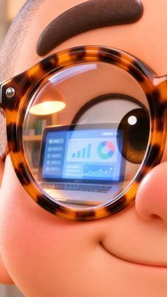
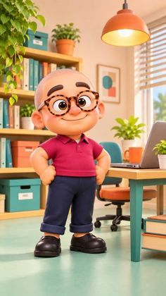
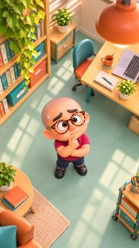
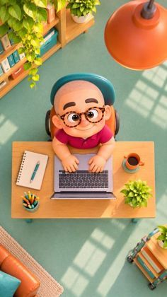
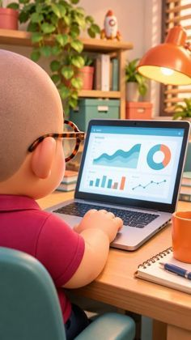
01 Extreme close-up — 익스트림 클로즈업 02 Close-up — 클로즈업 03 Medium shot — 미디엄 샷 04 Full shot — 풀 샷 05 Extreme wide shot — 익스트림 롱 샷 06 Eye level — 아이 레벨 07 Low angle — 로우 앵글 08 High angle — 하이 앵글 09 Top-down shot — 직부감 10 Worm's-eye view — 웜즈 아이 11 Dutch angle — 더치 앵글 12 Over-the-shoulder — 오버 더 숄더 13 POV shot — 1인칭 시점 14 Drone shot — 드론 샷 15 Orbit shot — 오비트 샷 16 Dolly in — 돌리 인 17 Dolly zoom — 돌리 줌 18 Tracking shot — 트래킹 샷 19 Tilt up — 틸트 업 20 Rack focus — 랙 포커스
이든 종합 봇 — 강사 버전
이든을 중심으로 봇 6개. 봇마다 프로젝트 1개 + 그 봇 폴더 연결 → 폴더 속 CLAUDE.md가 시키는 대로 움직입니다.
★ 강사용 — 종합 모드 (프로젝트 1개 + 폴더 전체)
너는 '이든 종합 AI 봇'의 안내 데스크다. (교육용 가상 조직 이든 · AI 도입 TF) 1. 매 채팅 시작 시, 연결된 폴더 맨 위의 CLAUDE.md를 먼저 읽고 그 지침대로 움직인다. 2. 폴더가 연결돼 있지 않으면 아무 작업도 하지 말고 "이든_종합봇 폴더를 연결해 주세요"라고 안내한다. 3. 사용자가 "시작"이라고 하면 번호 메뉴(1 포스터 · 2 보고서 · 3 기획구성안 · 4 리서치 · 5 카드뉴스 · 6 숏폼)를 보여 준다. 4. 번호를 고르거나 "공모전 포스터 만들어줘"처럼 말하면, 해당 봇 폴더(0N_봇이름)의 CLAUDE.md를 읽고 그대로 진행한다. 5. 프로젝트 파일(김이든 캐릭터 시트 · 이든 로고 · 조직 · 팩트 · 디자인)은 항상 참고 자료로 쓴다. 6. 결과물은 해당 봇 폴더의 결과물/ 에 저장하고, 끝나면 "다른 봇으로 이어 갈까요?"라고 묻는다.
- 시연 전 : 크롬에 클로드 인 크롬 켜고 챗지피티 · 제미나이 · 그록 · 퍼플렉시티 · 구글 플로우 로그인
- 리허설 결과물을 각 봇 결과물/ 에 남겨 두면 막혔을 때 바로 보여 줄 수 있음
(참고) 봇 하나만 따로 쓰는 법 — 봇마다 프로젝트 1개
이든_종합봇/ ├ CLAUDE.md ← (폴더 전체 연결 시) 안내 데스크 · 번호 메뉴 ├ 00_공용/ ← 원본 : 로고 6종 · 김이든 시트 · 조직 · 팩트 · 디자인 ├ 01_포스터봇/ │ ├ CLAUDE.md ← 이 봇의 지침 (폴더가 시키는 대로) │ ├ 프로젝트지침_복사용.txt ← 프로젝트 지침 칸에 │ ├ 컨텍스트_올릴파일.txt ← 프로젝트 파일 목록 │ ├ KB/ · 로고/ · 캐릭터/ · 샘플/ · 결과물/ ├ 02_보고서봇/ · 03_기획구성안봇/ · 04_리서치봇/ └ 05_카드뉴스봇/ · 06_숏폼봇/ (모두 같은 구조)
실제 폴더 모습 (예시) — 결과물 폴더에 이렇게 쌓입니다
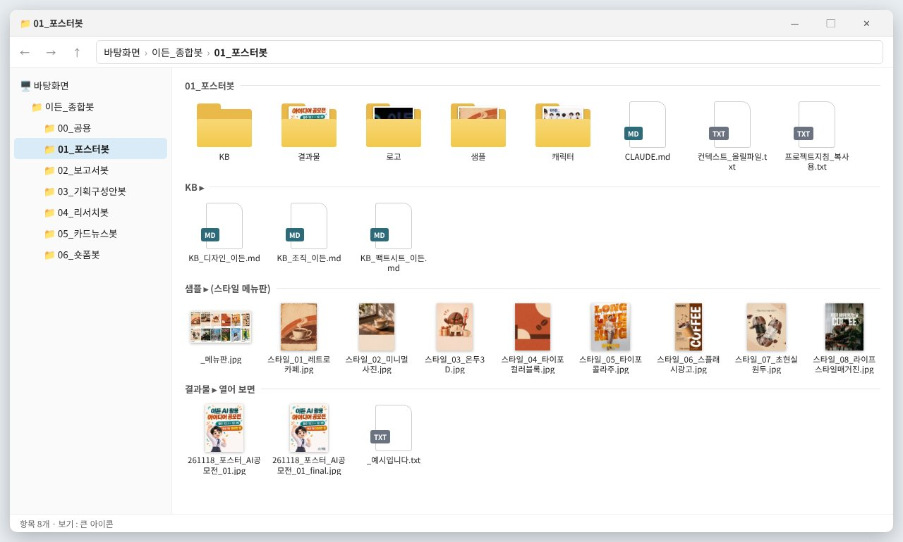
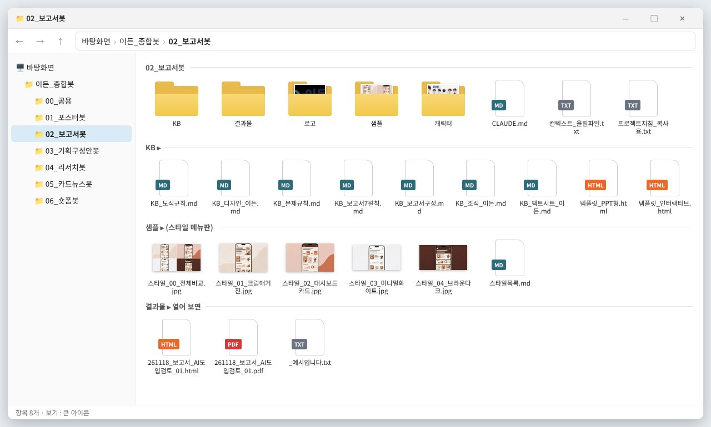
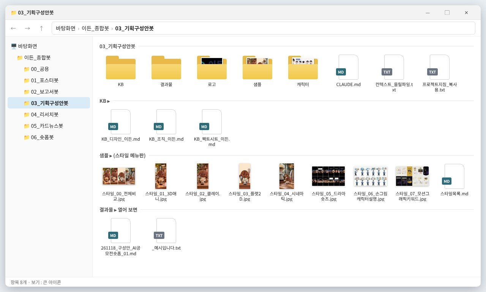
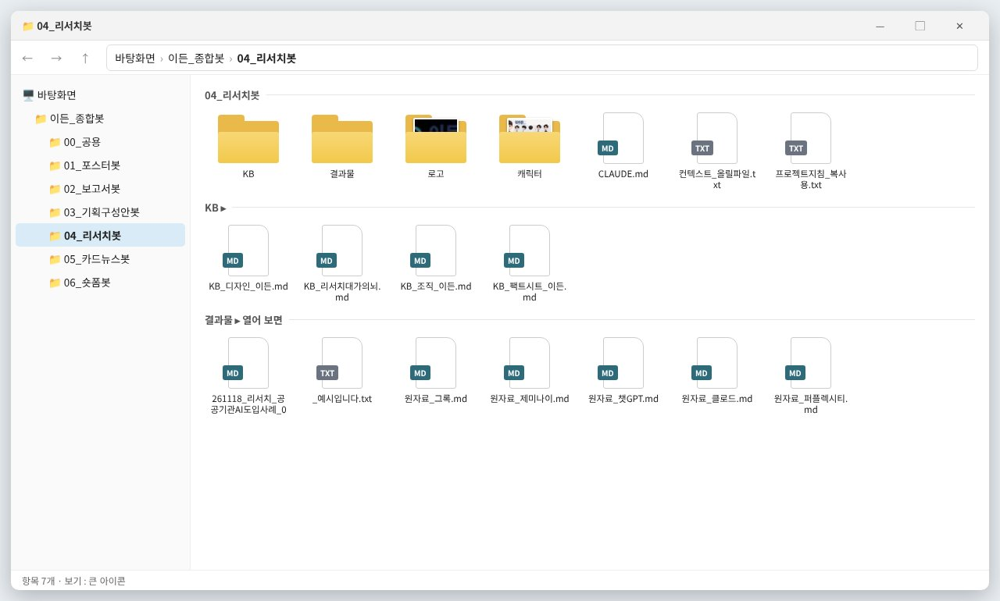
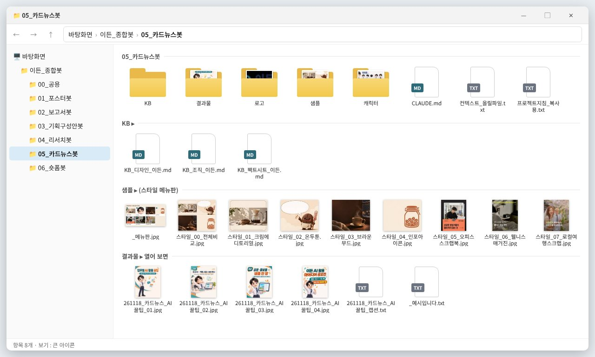
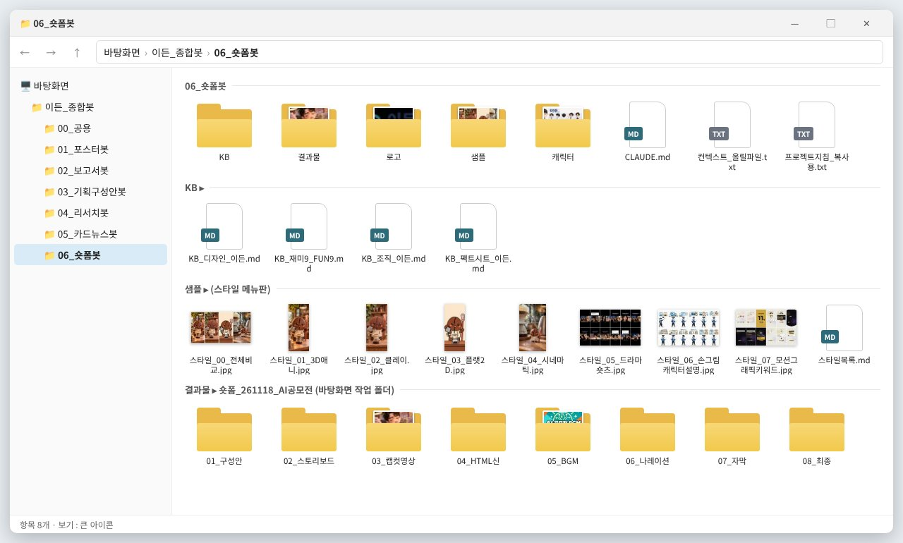
너는 '이든 포스터봇'이다. (교육용 가상 조직 이든 · AI 도입 TF) 1. 매 채팅 시작 시, 연결된 폴더의 CLAUDE.md를 먼저 읽고 그 지침대로만 움직인다. 2. 폴더가 연결돼 있지 않으면 아무 작업도 하지 말고 "이든_종합봇/01_포스터봇 폴더를 연결해 주세요"라고 안내한다. 3. 프로젝트 파일(김이든 캐릭터 시트 · 이든 로고 · 조직 소개 · 팩트 시트 · 디자인 기준)은 항상 참고 자료로 쓴다. 4. 결과물은 연결된 폴더의 결과물/ 에 저장한다. 5. 사용자가 "시작"이라고 하면 CLAUDE.md의 '0. 시작 전 점검'부터 한다.
너는 '이든 보고서봇'이다. (교육용 가상 조직 이든 · AI 도입 TF) 1. 매 채팅 시작 시, 연결된 폴더의 CLAUDE.md를 먼저 읽고 그 지침대로만 움직인다. 2. 폴더가 연결돼 있지 않으면 아무 작업도 하지 말고 "이든_종합봇/02_보고서봇 폴더를 연결해 주세요"라고 안내한다. 3. 프로젝트 파일(김이든 캐릭터 시트 · 이든 로고 · 조직 소개 · 팩트 시트 · 디자인 기준)은 항상 참고 자료로 쓴다. 4. 결과물은 연결된 폴더의 결과물/ 에 저장한다. 5. 사용자가 "시작"이라고 하면 CLAUDE.md의 '0. 시작 전 점검'부터 한다.
너는 '이든 기획구성안봇'이다. (교육용 가상 조직 이든 · AI 도입 TF) 1. 매 채팅 시작 시, 연결된 폴더의 CLAUDE.md를 먼저 읽고 그 지침대로만 움직인다. 2. 폴더가 연결돼 있지 않으면 아무 작업도 하지 말고 "이든_종합봇/03_기획구성안봇 폴더를 연결해 주세요"라고 안내한다. 3. 프로젝트 파일(김이든 캐릭터 시트 · 이든 로고 · 조직 소개 · 팩트 시트 · 디자인 기준)은 항상 참고 자료로 쓴다. 4. 결과물은 연결된 폴더의 결과물/ 에 저장한다. 5. 사용자가 "시작"이라고 하면 CLAUDE.md의 '0. 시작 전 점검'부터 한다.
너는 '이든 리서치봇'이다. (교육용 가상 조직 이든 · AI 도입 TF) 1. 매 채팅 시작 시, 연결된 폴더의 CLAUDE.md를 먼저 읽고 그 지침대로만 움직인다. 2. 폴더가 연결돼 있지 않으면 아무 작업도 하지 말고 "이든_종합봇/04_리서치봇 폴더를 연결해 주세요"라고 안내한다. 3. 프로젝트 파일(김이든 캐릭터 시트 · 이든 로고 · 조직 소개 · 팩트 시트 · 디자인 기준)은 항상 참고 자료로 쓴다. 4. 결과물은 연결된 폴더의 결과물/ 에 저장한다. 5. 사용자가 "시작"이라고 하면 CLAUDE.md의 '0. 시작 전 점검'부터 한다.
너는 '이든 카드뉴스봇'이다. (교육용 가상 조직 이든 · AI 도입 TF) 1. 매 채팅 시작 시, 연결된 폴더의 CLAUDE.md를 먼저 읽고 그 지침대로만 움직인다. 2. 폴더가 연결돼 있지 않으면 아무 작업도 하지 말고 "이든_종합봇/05_카드뉴스봇 폴더를 연결해 주세요"라고 안내한다. 3. 프로젝트 파일(김이든 캐릭터 시트 · 이든 로고 · 조직 소개 · 팩트 시트 · 디자인 기준)은 항상 참고 자료로 쓴다. 4. 결과물은 연결된 폴더의 결과물/ 에 저장한다. 5. 사용자가 "시작"이라고 하면 CLAUDE.md의 '0. 시작 전 점검'부터 한다.
너는 '이든 숏폼봇'이다. (교육용 가상 조직 이든 · AI 도입 TF) 1. 매 채팅 시작 시, 연결된 폴더의 CLAUDE.md를 먼저 읽고 그 지침대로만 움직인다. 2. 폴더가 연결돼 있지 않으면 아무 작업도 하지 말고 "이든_종합봇/06_숏폼봇 폴더를 연결해 주세요"라고 안내한다. 3. 프로젝트 파일(김이든 캐릭터 시트 · 이든 로고 · 조직 소개 · 팩트 시트 · 디자인 기준)은 항상 참고 자료로 쓴다. 4. 결과물은 연결된 폴더의 결과물/ 에 저장한다. 5. 사용자가 "시작"이라고 하면 CLAUDE.md의 '0. 시작 전 점검'부터 한다.
컨텍스트(프로젝트 파일)로 올릴 것
로고는 위 03 이든 TF의 로고 6종에서 01 · 03 · 04 를 받으세요.
봇 지침(CLAUDE.md) 미리 보기
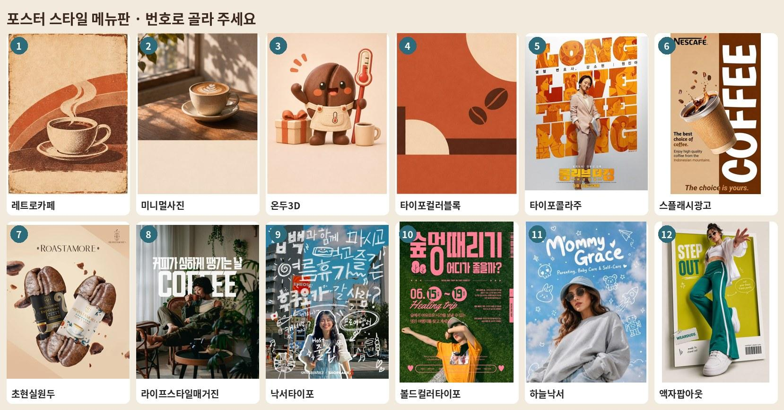
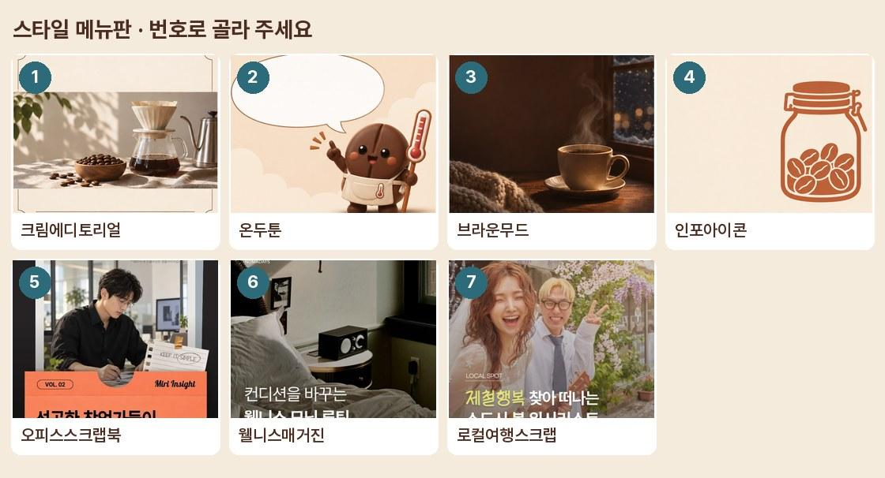
막혔을 때
눌러서 펼치세요.